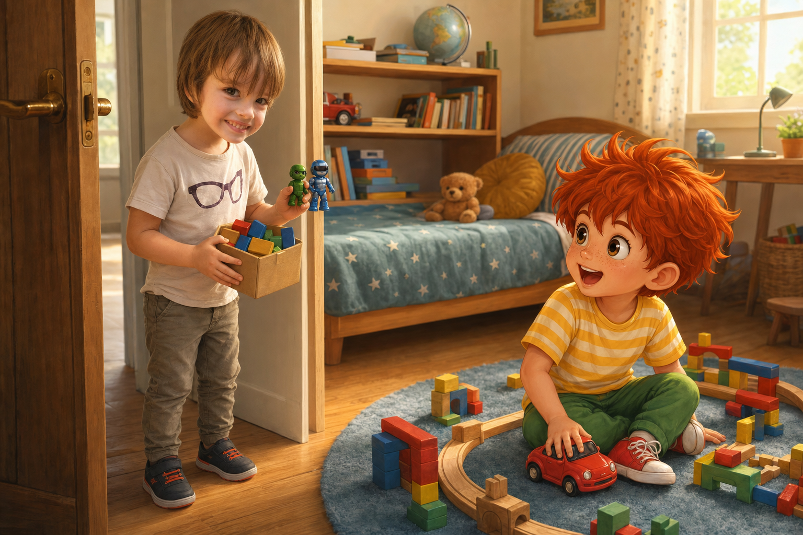
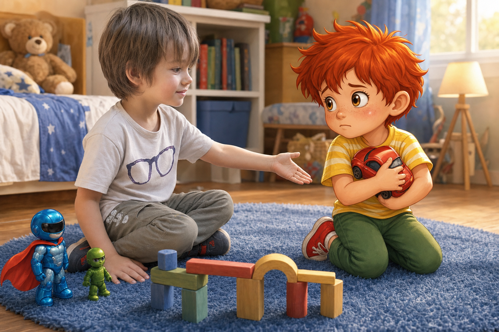
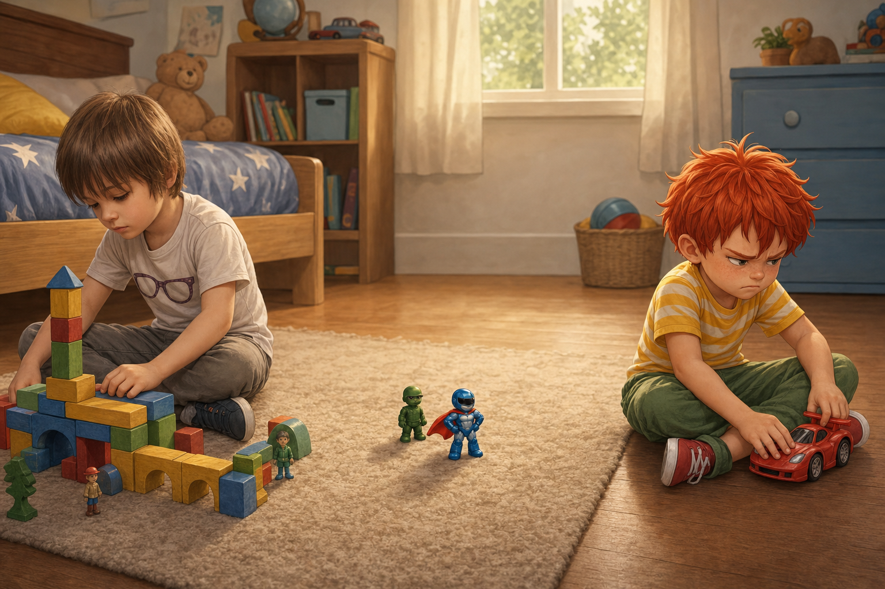
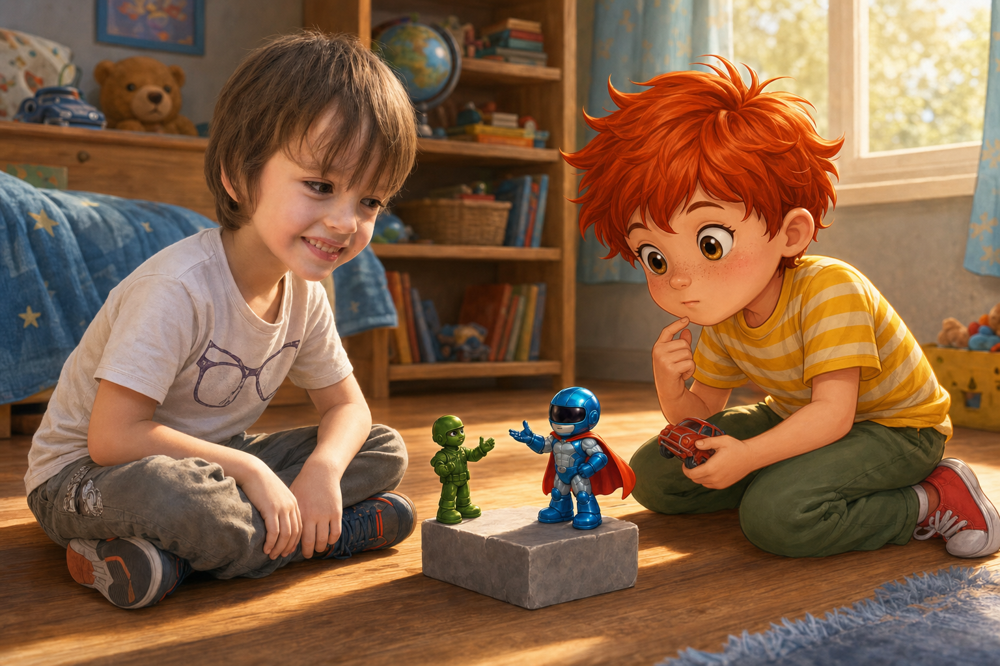
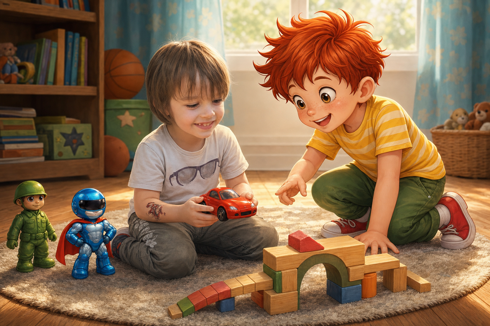
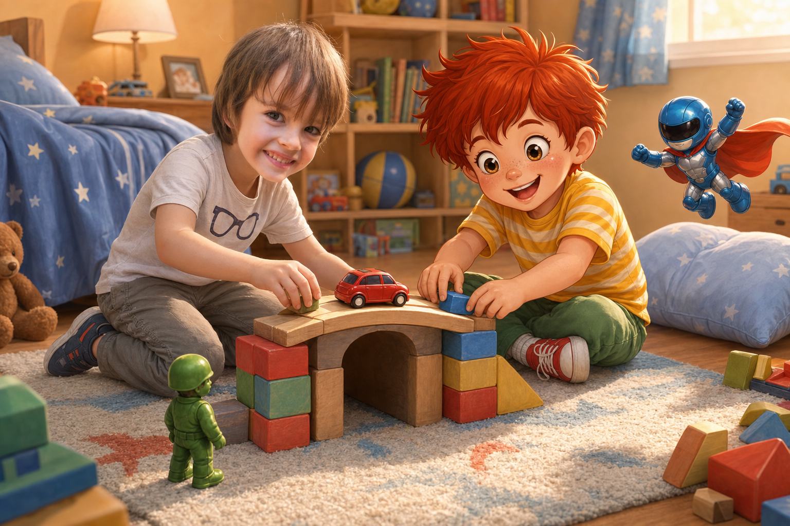

Камен и Палавко се учат да споделят
В стаята на Палавко беше тихо само за три секунди.
После от килима се чу:
- Бръммм! Път за най-бързата количка на света!
Палавко лежеше по корем на шарения килим и буташе червената си количка по писта от кубчета. До него стояха Рико и Блицко. Рико наблюдаваше много сериозно, а Блицко беше застанал на едно кубче като супергерой на покрив.
На вратата се почука.
- Камен дойде! - извика мама от коридора.
Камен влезе с усмивка. Носеше малка кутия с цветни блокчета и две фигурки. Косата му беше рошава, очите му гледаха любопитно, а тениската с големите очила сякаш също искаше да види какво ще стане.

- Здрасти - каза Камен. - Донесох мост и тунел. Може да ги сложим на пистата.
Палавко веднага придърпа количката към себе си.
- Тунелът може - каза той. - Но количката е моя. Само аз я карам.
Камен примигна.
- Добре - каза тихо. - Тогава аз ще строя тунела.
Първо играта вървеше чудесно. Камен построи висок мост от блокчета. Палавко мина с количката под него и извика:
- Победа!
После Камен сложи тунел.
- Може ли сега аз да пробвам количката? Само веднъж.
Палавко поклати глава толкова бързо, че червената му коса подскочи.
- Не. Ако я счупиш?

- Аз ще внимавам.
- Пак не.
Камен остави едно блокче на килима. Усмивката му стана по-малка.
- Тогава аз няма да давам тунела - каза той.
Палавко се намръщи.
- Ама без тунела пистата е скучна!
- А без количката моят тунел е скучен - отвърна Камен.
В стаята стана много тихо. Даже Блицко не каза нищо. Рико погледна количката, после тунела, после двамата приятели.

- Ако всеки пази само своето - рече Рико, - играта се разделя на две малки самотни игри.
Блицко вдигна ръка.
- А супергероите не спасяват света поотделно. Поне не когато има мост, тунел и червена количка.
Палавко погледна количката си. Тя беше много хубава. Червена. Блестяща. Негова.
После погледна Камен. Камен не се караше. Просто седеше до блокчетата и въртеше едната фигурка между пръстите си.

- Страх ме е да не я счупиш - каза Палавко по-тихо.
Камен вдигна очи.
- Можеш да ми покажеш как се кара внимателно. А после аз ще ти покажа как мостът не пада.
Палавко се замисли. Това звучеше честно.
- Добре - каза той. - Но първо караш бавно.
Камен се усмихна.
- Бавно като охлюв с каска.
Палавко се засмя. Рико почти падна от кубчето си, а Блицко заяви, че охлювите с каски са много подценени състезатели.

Камен взе количката с две ръце. Палавко му показа как да я пусне по пистата. Количката мина през тунела, качи се на моста и спря точно пред Рико.
- Спасителната кола пристигна! - извика Камен.
- Сега аз ще сложа фигурките! - каза Палавко.
Двамата започнаха да строят заедно. Тунелът стана пещера. Мостът стана замък. Червената количка вече не беше просто количка, а смела спасителна кола. Рико пазеше входа, а Блицко летеше от възглавницата до леглото, за да проверява дали всички са в безопасност.

Играта ставаше все по-голяма.
Палавко даде количката на Камен още веднъж. После Камен даде на Палавко любимата си фигурка. После двамата измислиха правило: който вземе чужда играчка, първо пита, после пази, а накрая връща.
- Знаеш ли - каза Палавко, докато двамата седяха на килима сред мостове, тунели и възглавници, - когато не давах количката, си мислех, че играта ще си остане моя.
- И остана ли? - попита Камен.
Палавко поклати глава.
- Не. Стана малка.
- А сега?
Палавко погледна пистата, Рико, Блицко, тунела, моста и червената количка.
- Сега е огромна.
Поука:
Когато не споделяш - играта е самотна. Само заедно можем да се забавляваме истински.